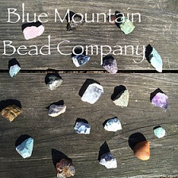

Welcome! I’m Alyssa and Blue Mountain Bead Company is my little shop run out of Charlotte, North Carolina. I create handcrafted jewelry, which is inspired by the beautiful world around me. All of my pieces are unique and one-of-a-kind. Check out Blue Mountain Bead Co. on instagram @bluemountainbeadco I hope you enjoy browsing :)
Take a look at the policies below and feel free to contact me with any questions.

| Shop Policies | |
|---|---|
| Payment Accepted: | Credit/debit cards, Paypal, Apple Pay, Etsy Gift Cards. |
| Shipping: | Orders will typically ship out the business day after they are placed(I follow the U.S. holiday schedule). However, please allow up to 3 days for processing, especially on customized orders. |
| Refunds and Exchanges: | I do accept refunds and exchanges. If you are unhappy in any way with your order, please contact me within 5 days of receiving your item. |
| Additional policies and FAQs: | Most items, unless otherwise noted, are pre-made and ready to ship. If you would like a size adjustment on any piece, please let me know! I'm definitely willing to accommodate as long as I have the necessary supplies available. |